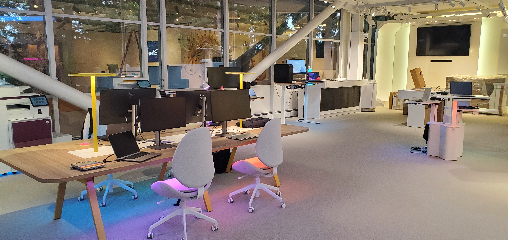
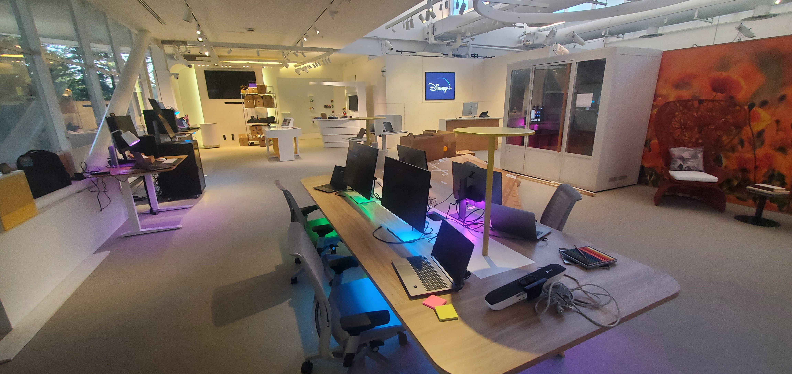
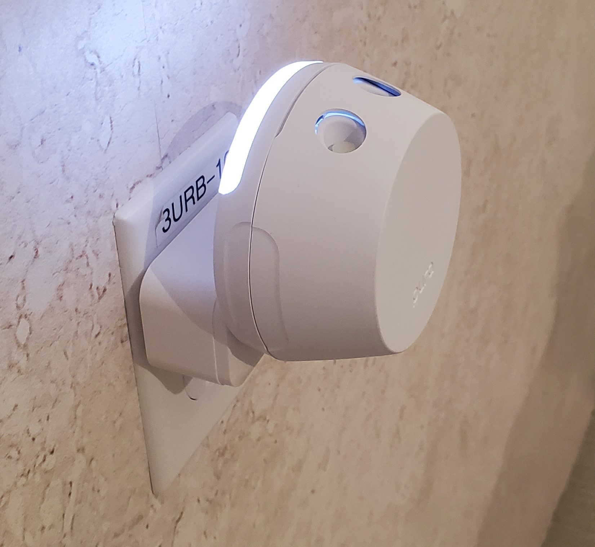

HP Customer Welcome Center
├── Hardware -> Philips Hue / NFC Readers / Sonos / Pura Diffusers
└── Integration -> IoT Automation / Multi-sensory Control
• Redesigned CWC spanning 8 distinct areas across the Palo Alto facility
• NFC-triggered persona lighting and product spotlighting
• Multi-sensory automation — lights, sounds, and scent throughout the space
• Hosted HP's first-ever HP Imagine event in 2023
>>> The Challenge
HP wanted to rethink their Customer Welcome Center at the Palo Alto facility. The existing space was product-focused; the goal was a consumer-centric experience that puts HP hardware into real-world context, so customers could actually picture themselves using it. propelland was brought in to redesign the space end-to-end.
>>> What I Built
My role was the technical buildout of the interactive activations inside the space. I built them on top of Home Assistant, an open-source IoT platform that ties together a wide range of smart devices. The main activation, "Choose Your Persona", used NFC-enabled ID cards to trigger Philips Hue lighting that spotlit the products for each persona — Tech Expert, Creative Expert, Office Collaborator, and more.
On top of lighting, Sonos speakers and Pura scent diffusers added ambient sound and scent to each zone, making the environment feel genuinely different as you moved through the space. Everything was built to be modular and easy to reconfigure as needs changed.
Choose Your Persona interaction demo
In this particular interaction, "Choose Your Persona", personas were identified and created to represent users that would benefit from the products that exist within the model co-working space. Examples of some of the personas that were created are "Tech Experts", "Creative Experts", "Office Collaborators", etc. We had the lights and personas activated by custom ID cards, each one representing a different persona to be highlighted.
NFC card activation system in action
The cards are scanned by a NFC tag reader and we also added control cards to turn them all on or off and to reset them. The primary user for these cards would be a tour guide that would guide customers through the space.

System architecture and modular design
Everything was built to be easily customizable and accessible, so that the system can be modified when different needs arise.

Multi-sensory control setup
Sounds and smells were added and placed throughout the space as well. Sounds were controlled by Sonos speakers attached to Home Assistant, where local sound files were being hosted. Smells were controlled by a smart plug attached to Wi-Fi connected aroma diffusers from Pura.

Final installation — contextual product experiences across 8 zones
>>> The Impact
The new CWC spans 8 distinct areas: a multipurpose space, living room, café, terminals, co-working space, conference room, and executive suite. Each zone puts HP products into a real setting so customers can see how they'd actually fit into their day.
In 2023, HP held its first-ever HP Imagine event at the new Palo Alto Customer Welcome Center.